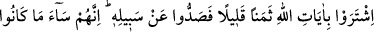
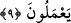

lezzetlere, başkalarına cefa vermeye, zulme, riyaya, iki yüzlülüğe meyil vardır. Halbuki
Allah Teâlâ, mîsak günü ondan doğruluk ve ihlâs konusunda ahid almıştır. Nefis hayatta
olduğu sürece kötü sıfatları üzere devam eder. Dünyevî ve uhrevî maksatlardan arınmış
bir kulluğa yönelmesi mümkün değildir. Celâl ve cemâl sıfatlarının tecellilerinden
akseden nurlarla kalb aynası nurlanırsa, yaratılmış vasıfları fenâ bulur, hâlıkıyyet
nurlarıyla bâkî kalır. Böylece Allah onu dünya ve ahirette sağlam bir sözle sâbit kılar.
Artık o nefis ahdi bozmaktan emin olur.
Mescid-i Haram, vusûl makamına işarettir. O makam dünya ve ahiret ehline harâmdır.
O ehlullahın ve O’nun seçkin kullarının makamıdır. Rabbimizden bizleri de bu güvenli
makama ulaştırmasını ve o emin harem’e girmeyi nasib etmesini niyaz ederiz.
Şair şöyle der:
Sıdka ve takvaya sarıl,
Ucbü ve riyayı terk et,
Nefis ve hevayı yen,
Arzu ve hedefine er.
Akıllıya lazım olan nefisle mücâhede etmek, ahidlere ve haklara riâyetkâr olmaktır.
Her türlü fâsıklıktan ve haklara riâyetsizlikten kaçmaktır.
Şiblî (k.s.) der ki: “Bir vakit helaldan başka bir şey yemeyeceğim diye kendi kendime
söz vermiştim. Bir gün sahrada dolaşıyordum. Derken bir incir ağacı gördüm. Yemek
için elimi uzatınca ağaçtan şöyle bir ses geldi: Sözünde dur ve meyvemden yeme.”
Fakir (İsmail Hakkı Bursevî) der ki: Bu hikayede iki şey var: Birincisi, kerâmet
zuhûrudur ki ağacın konuşmasıdır. İkincisi ise Allah Teâlâ’nın Şiblî’ye akdini
hatırlatmasıdır ki bu da onun talebindeki samimiyeti ve niyetindeki sadakati
sebebiyledir. Bu dereceye erişmek isteyen kişi, vaktini iyi değerlendirsin ve her anını
koruyup kollasın. Çünkü maksadlara erişmek ancak böyle murâkabe ile mümkün olur.
Allah bizi ve sizi haddi aşmaktan ve yoldan çıkmaktan korusun, hakkın sınırında durup
beklemek ve hakikate götüren yolda sebatla şereflendirsin.
9. Allah’ın âyetlerini az bir paraya sattılar da (insanları) O’nun yolundan
alıkoydular. Gerçekten yapmakta oldukları şeyler ne kötüdür.
“Allah’ın âyetlerini az bir paraya sattılar da” Yâni ahdi bozan müşrikler, ahidlere
vefakâr olmayı ve her işte dürüstlüğü emreden âyetleri terk ettiler ve onların
karşılığında dünya çerçöpünden değersiz bir şey aldılar. Yani peşlerinden gittikleri